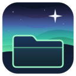

Downloads
Version 0.24.0, released 14 November 2026. Start with NorthRay Launcher, or download any app on its own.
NorthRay Launcher
Installs, updates and opens NorthRay apps, and checks each download against its published checksum before running it.
NorthRayLauncher-Setup-0.24.0.exe · 1.7 MB
SHA-256 checksum
59d9ba7b402e3e8b1dbf921e16029491884481ba0e83dc838a119f9c007ae79bIndividual apps
 Download
DownloadNorthRay Writing Studio
A writing and publishing studio for authors: worlds, series and books, through to finished editions.
SHA-256 checksum
2820946aa055f236a164b0b28e18b519676fe60cad04d3dad28f16ab66791d6f- Download
NorthRay Browser
A web browser for Windows in the NorthRay look, with creative tools planned.
SHA-256 checksum
e1d4469ee93a845abf294c65a6dbe41ca3a29a2b97107add7de64dc482ad80bb 
DownloadNorthRay Files
A file manager for Windows in the NorthRay look, with creative tools planned.
SHA-256 checksum
d0ac79bffd6b327c43d5afae616fc3152b476b93004b8d002663a3a316726130
Before you install
- Windows 10 or 11, 64-bit. The Writing Studio and NorthRay Browser use Microsoft Edge WebView2, which comes with Windows.
- No administrator permission or account needed. Everything installs for your Windows account only.
- Free to use. No subscriptions, paywalls or deliberately restricted features, and no account to create.
- CJ Philip Community, with apps associated with CJ Philip, is an optional download inside NorthRay Launcher.
- Windows may warn you. The installers aren't code-signed yet, so SmartScreen may say "Windows protected your PC". Choose More info, then Run anyway, only if you downloaded the file from this page. You can check it against the SHA-256 checksum.
- Uninstalling: use NorthRay Launcher, or Windows Settings, Apps, Installed apps. Your settings and libraries are kept.